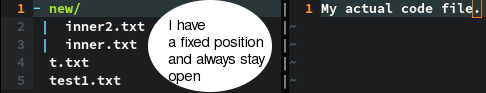
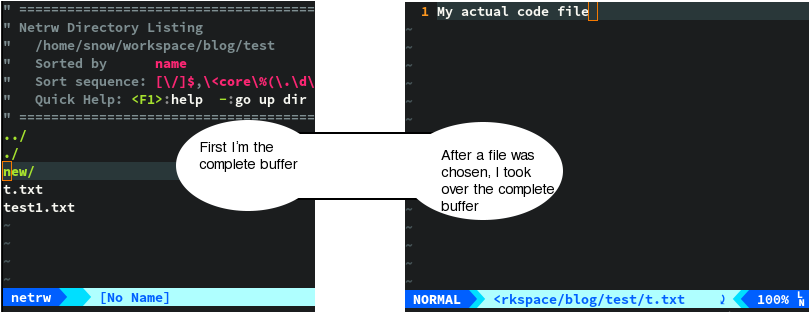

This time we look into an alternative for NERDTree, which is called netrw. Thanks to aguerosantiale, who put my attention onto it. Both plugins serve the same purpose, but they behave fundamentaly different in archiving this. So the first question you will probably ask is: “why use netrw, if I’m already familiar with NERDTree?”. The biggest plus for netrw is, that you don’t have to download anything. If you set nocampatible in your .vimrc you are able to use it. So if you are on a different machine, for example connected via ssh, you are able to use netrw. The second point is, that vim is very reactive by nature, but if you have too many plugins running at the same time, you could destroy this attribute. So it’s always good to use something, what is already there. Not everyone will like netrw, because it isn’t the approach you know from Sublime Text or others. Netrw is a so called split explorer, while tree views like NERDTree are called project drawer. To learn about the difference, we will talk about the project drawer approach first. Project drawer open a new split view on the left(sometimes right) and stays opened during your complete coding session. Every time you click on an item in the project drawer, it opens the files in a separate buffer.

Vim wasn’t supposed to work along with a feature like this. That’s why we had to do some tweaks in the last post, to make it work. Especially if you are working with splits, you first must know in which split NERDTree opens your file. If you got that down, you need to learn, how to navigate between them fast. If you want to open a file in a split, which is on the opposite to the project drawer, you have to go a long way… That’s why we created a keybinding to toggle NERDTree instantly. Then we choose a file and got thrown in the opened buffer immediately. To sum it up: that aren’t d many key presses to get work done with NERDTree. So overall they provide a very good solution for bringin in a principle, which wasn’t supposed to be in vim initially. But what is different with the split explorer? A split explorer opens up in the same buffer. You then are able to choose a new file and this file opens up in the same buffer again. It’s like sitting in front of a book and having the table of contents opened. You look up the page you want to see and switch to the according page. If you read the page, you can go back to the table of contents and choose a new page and switch to it and so on and so forth. You are also able to open the explorer in another split view and choose which file to open from there.

So what’s the benefit from this? First of all: you look at the project drawer very rarely(only if you want to change a file). So let’s say 5% of your time coding is spent with the project explorer and the rest of the time you ignore it. But 95% of the time it is still open and takes away space from your monitor. So why not keep it closed as long as you are working on a file until you need to switch? Another benefit is, that you always know where your buffer opens up. If you want to know more about project drawers and split explorers, have a look at oil and vinegar, it’s great in-depth article about this topic. If you are a NERDTree user and you are critical with the previous principle, you can test the split explorer by adding the following line to your .vimrc
let NERDTreeHijackNetrw=1Close your normal NERDTree with the :NERDTreeToggle command and type in :e . or create a mapping in your .vimrc. This is mine for example:
nnoremap <leader>e :e .<CR>Of course you can take whatever binding you are comfortable with. Now NERDTree should be opened in the buffer you are currently in and if you open a file, NERDTree will hide and your chosen file appears instead. You can experiment with this setup now. If you feel more comfortable with this setup, like me, you can also do the switch to netrw. You need to learn some new shortcuts for netrw, but they are pretty intuitive in my opinion. If you don’t want to go that way, you can stay with this NERDTree approach aswell and if you don’t feel comfortable with the split explorer approach at all you can keep using NERDTree as it is. If you decided for netrw, I will get you going in the upcoming couple of paragraphs.
Configuration
If you removed NERDTree and all the according configuration from your .vimrc you can add the following line to your .vimrc.
let g:netrw_liststyle=3This will open up netrw in tree like view and not a list. So it’s easier to recognize which are contents of which subfolders. You can now press the shortcut defined above and you should see netrw. You are also able to open up netrw in a vertical or horizontal split. I’ve created the following keybindings:
"Open netrw in a vertical split
nnoremap <Leader>v :vs .<CR>
"Open netrw in a horizontal split
nnoremap <Leader>s :sp .<CR>I use these, when I want to compare two files or look something up from another file. The banner at the top is pretty helpful in the beginning, but it only took away space when I knew all the information. At this point I added the following to my .vimrc
let g:netrw_banner=0This will hide the banner and only shows the tree itself.
Navigation
Like in NERDTree, you are able to navigate with the j and k keys. You can go to the top with gg and to the bottom with G. You are also able to search in the explorer buffer, to get to a specific entry fast(Those options are also available in NERDTree, but I didn’t mentioned them in the last post). But jump up and down a directory(NERDTree: p and P) don’t exist from what I’ve found out so far. Files and folders are opened by pressing
Bookmarking
You are able to bookmark directories, but no files. By pressing mb you create a bookmark. With qb you can open a quick fix window, which shows the history and bookmarked directories, but you aren’t able to choose anything here. With gb you should be able to jump to the last bookmark. Bookmarking and everything project related, like changing the current work directory and minimizing the tree to the current directory are the biggest downside with netrw, because they often seem to not work properly or are missing completely.
Opening files
Like already mentioned, files can be opened by pressing
Modifying Nodes in the file system
In NERDTree we needed to call a menu first and choose our operation afterwards, but in netrw there is a keybinding for each of these operations, without the need to open a menu first. New files can be created by pressing %. You need to type in the name afterwards and the file will be opened automatically. By pressing d you create a new directory. D deletes the current node under your cursor, whatever it is a directory or file. The last operation in this bulk is renaming, which is called with R. All operations will be done relative from your current cursor position. But also this has a downside. Creating new files don’t show up immediately. Sometimes even a refresh didn’t help(C-l). So I had to close the sub directory and open it again, until it showed up.
Summary
I really like the split explorer approach, but for me netrw shows his weaknesses, if I want to do anything advanced. I think netrw is the perfect choice, if you only rely on navigation and opening files. If you want to do more, netrw falters. NERDTree also isn’t perfect to use with this approach, because every time it is opened, it is reset. This means that every opened directory is closed. So you have to navigate the whole way to a file again. Thats why NERDTree is only a good choice, if you want to stay with the project drawer approach. If you decided to stay with netrw and need further help, you can type in
:h netrwThis will show you the whole documentation of netrw, containing all it’s features and configuration possibilities. During the writing of this article I also am experimenting with vimfiler, which seems to combine the good things of both plugins and adds a whole bunch of configuration possibilities on top of it. I will probably cover this plugin in a later post, if it fulfills my needs.